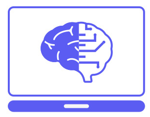

Large Language Models are advanced artificial intelligence models based on the Transformer architecture. They specialize in understanding and generating natural language. Through comprehensive Pre-trained on large amounts of unannotated text data, they can cover a wide range of linguistics Capture subtleties and context. The self-attention mechanism allows these models to focus on different parts of the input and capture long-range dependencies. Their versatility extends from question-and-answer systems to text generation, but there are also ethical considerations associated with their use.
AI is a broader term that refers to the development of intelligent systems, while LLMs are specialized models within the AI Field that specialize in processing and generating natural language understanding. AI can encompass various technologies and methodologies, while LLMs focus on specific models for language processing.
These platforms are able to generate texts, answer questions, simple code fragments in creating different programming languages, carrying out language translations, creative writing Help, provide support with homework and learning requests, and act as a conversation partner. 